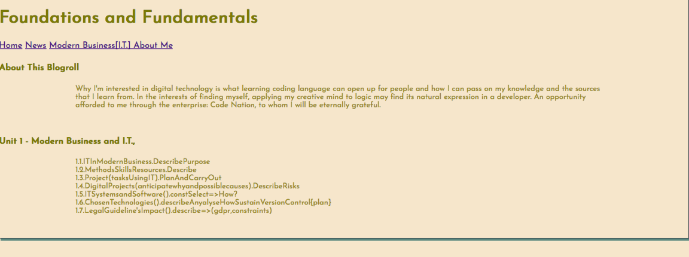
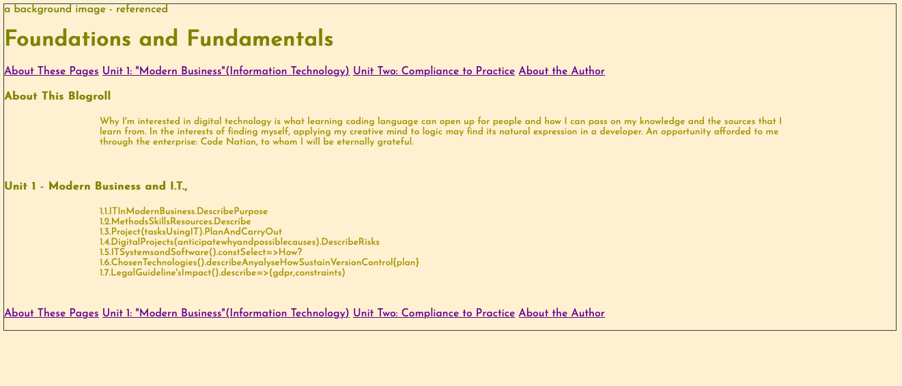

1.1 Describing the content and layout for each page
1.5 Describing copyright and other constraints affecting websites
1.6 Describing access issues that need taking into account
- describe issues that people with disabilities may face when using webpages and how we can overcome them
1.7 Describe which are the appropriate filetypes for websites
My content is laid out in the following ways:
I split the website into four separate pages; a homepage with the subheading “About this Blogroll’, ‘Unit One,’ ‘Unit Two,’ and ‘About Me’. This is so the reader lands on the page the reason why this website exists to it is clear, what I am introducing the reader to.
I have chosen to replicate the navigation bar at the end of each webpage for ease of navigation. This means the reader wouldn’t have to scroll all the way back to the top to view the navigation bar, in order to proceed to the next webpage once they get to the end, having finished reading their current webpage.
For the setup, I indented the paragraphs from the title and this provides “white space” in between each paragraph while the subheading acts as separator for each talking point. This gives each component to the content a clear definition while relating the content to the subheading clearly.
For my research, not only have I referenced each statement with a hyperlink to the website of their respective references, if the reader hovers over the reference and hyperlink they have they have an opportunity to see the exact quote and reference source, as I have coded the reference [typed within the box parenthesis] to contain the reference with respective quotes inside and appreciation for each reference, and included the link at these instances. This is this is far providing link gives an opportunity for the reader reader for further reading.
In case the website link is broken or the website no longer exists, I have included a link to the specific quotes within the abbreviation for the reader.
The following is view of this website from a) Firefox browser and b) Safari browser:
a)

b)

There are three main laws governing the contents of websites so that people's rights are protected:
Copyright Laws protect the intellectual property (IP) of creators whereby the IP is owned by the creator and as such ownership laws apply to the IP.
The Equality Act 2010 negates companies to provide an advantage OR disadvantage towards people who have a personals they identify with that is not changable. In this context, The Equality Act 2010 legislates inclusion towards people who have a disability, where companies are proactively required to provide levels of enhancement to the access to website content, which would they would otherwise not have access to because of their disability. To execute this to a high standard, there is plenty of guidance provided on the http://www.gov.uk website.
General Data Protection Regulation May 2018(GDPR) legislates companies as strictly responsible to proactively protect the personal data of individuals from being used in a way the individual is unaware of, once this personal data is acquired by the company to provide their expected service. This data must be protected both physically (by locking it away) and digitally. This regulation also provides guidelines on how companies can practice due diligence when handling such sensitive data, and, allows a company do this efficiently, in a way that prevents such sensitive data from being exploited.
The Web Content Accessibility Guidelines (known as WCAG 2.1) is a guideline of recommendations for making website accesible to a "wider range of people with disabilities, including accommodations for blindness and low vision, deafness and hearing loss, limited movement, speech disabilities, photosensitivity, and combinations of these, and some accommodation for learning disabilities and cognitive limitations; but will not address every user need for people with these disabilities."
[REF.,
LINK]
In light of these guidelines, I propose to create more than one different view for this website. I propose having buttons at the top of this website so that the visitor can view the page in different colourways that would aid the reader to absorb the information as efficiently as possible. This protocol would be relevant to people who have impaired vision in the form of
Irlen Syndrome, which
is common among people with dyslexia.
Appropriate filetypes used for websites include:
.HTML files used to contain the content of a website.
.CSS files used to contain the style sheet of a website.
image files like .jpeg, .png, .gif...etc... used to provide images for a website.